MultiADS
Xử lý dữ liệu lớn với kỹ thuật giám sát nhận biết
Nhóm 7
Nguyễn Vũ Nguyên
Hoàng Mạnh Thiệp
Phạm Thị Kim Huệ
Abstract
- MultiADS là mô hình zero-shot và few-shot
- Phát hiện & phân đoạn dị thường
- Phân loại nhiều lỗi đồng thời
- Kết hợp ảnh – văn bản
Kiến trúc tổng thể
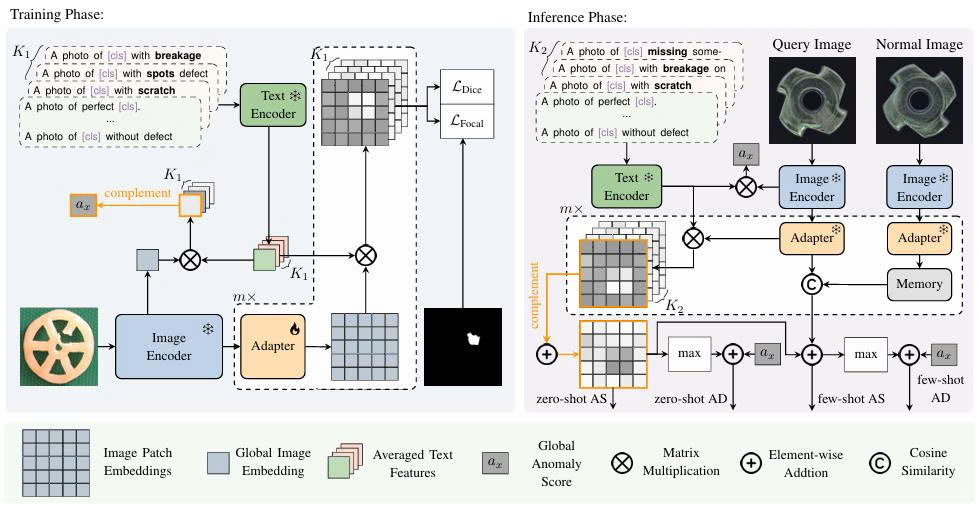CLIP
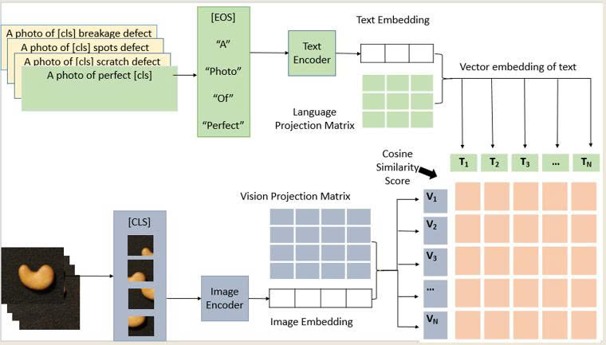- Liên kết không gian ảnh – văn bản
- Hỗ trợ zero-shot learning
Xử lý dữ liệu với MapReduce với mô hình CLIP
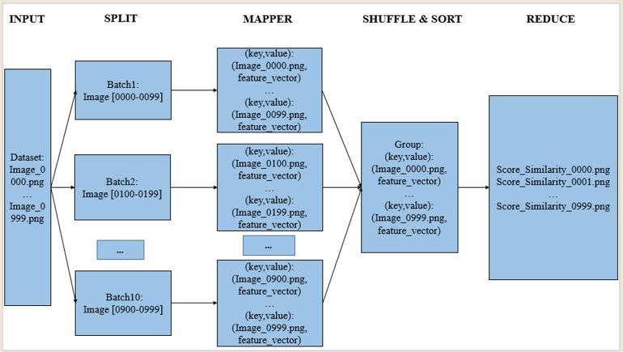Alignment & Multi-scale Similarity
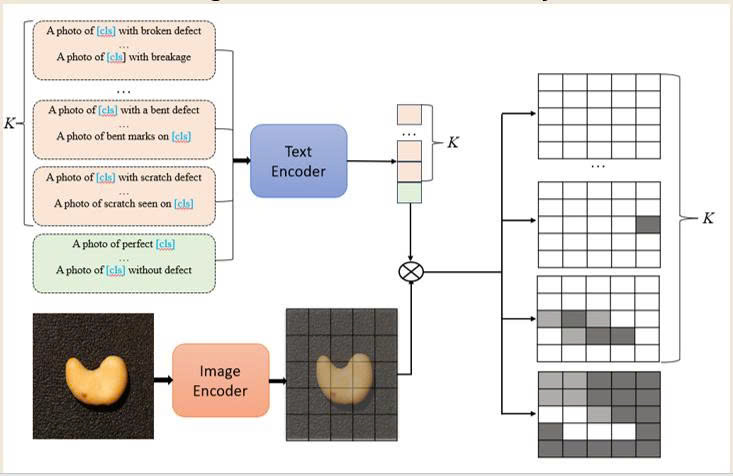- Linear Adapter căn chỉnh đặc trưng
- Similarity Maps đa tầng
Xử lý dữ liệu với MapReduce với mô hình Alignment & Multi-scale Similarity
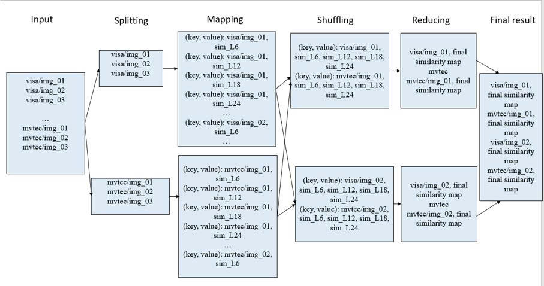Multi-type Segmentation Mask
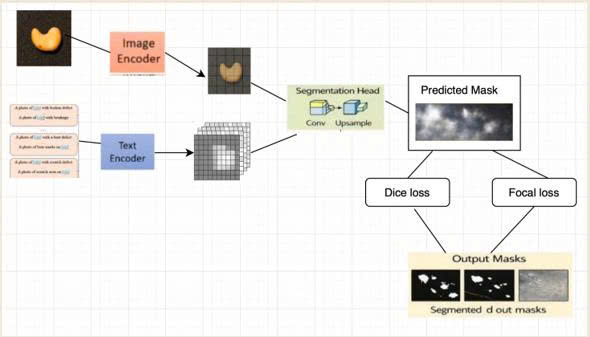- Sinh mask theo K lớp
- Nhận dạng nhiều dị thường cùng lúc
Xử lý dữ liệu với MapReduce tổng thể
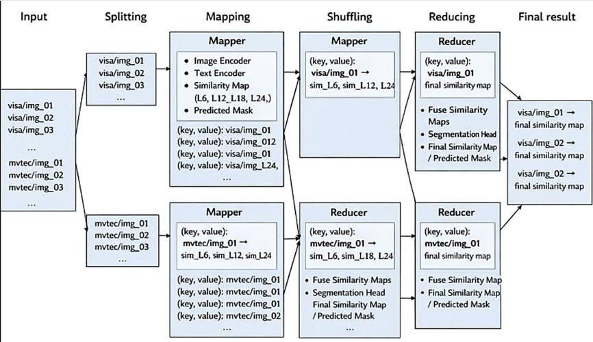Dataset
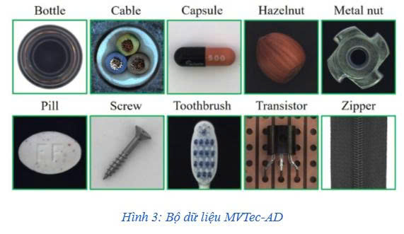Dataset
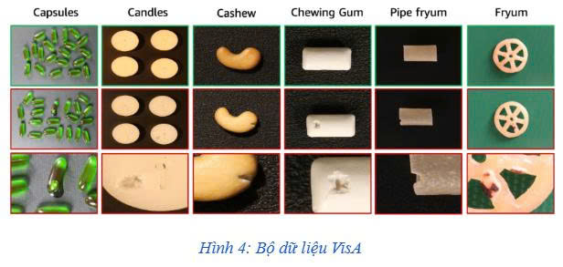Quá trình train
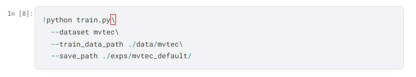Kết quả train

Quá trình test
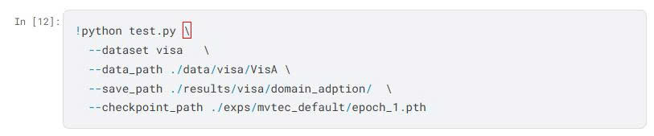Kết quả test
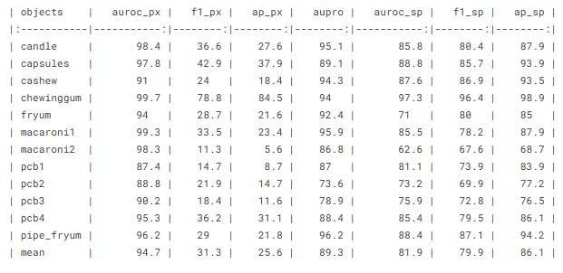Kết luận
- Hiệu quả với dữ liệu lớn
- Linh hoạt zero-shot / few-shot
- Phù hợp hệ thống MapReduce
TÀI LIỆU THAM KHẢO (1)
- [1] E. Sadikaj et al., “MultiADS: Defect-aware Supervision for Multi-type Anomaly Detection and Segmentation in Zero-Shot Learning”, ICCV 2025.
- [2] Q. Zhou et al., “AnomalyCLIP: Object-agnostic prompt learning for zero-shot anomaly detection”, ICLR 2024.
- [3] C. Wang et al., “Real-iad: A real-world multi-view dataset for industrial anomaly detection”, CVPR 2024.
- [4] Lei Ba et al., “Predicting deep zero-shot CNNs using textual descriptions”, ICCV 2015.
- [5] J. Dean & S. Ghemawat, “MapReduce: Simplified Data Processing on Large Clusters”, OSDI 2004.
- [6] H. B. Abdalla, “A Comprehensive Survey of MapReduce Models for Big Data”, MDPI 2025.
TÀI LIỆU THAM KHẢO (2)
- [7] A. Radford et al., “Learning Transferable Visual Models From Natural Language Supervision”, ICML 2021.
- [8] P. Bergmann et al., “MVTec Anomaly Detection Dataset”, CVPR 2019.
- [9] C. Zou et al., “VisA: A Visual Anomaly Dataset for Industrial Inspection”, CVPR 2022.
- [10] X. Li et al., “Dice loss for data-imbalanced NLP tasks”, ACL 2020.
- [11] T.-Y. Lin et al., “Focal loss for dense object detection”, ICCV 2017.